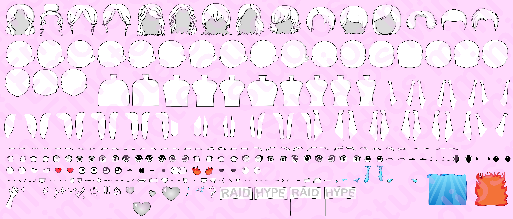

Mimi Emote Studios.
01 / The Objective
Why I Created Mimi Emote Studios
Twitch streamers have several options when choosing emotes for their channels, but each comes with its own advantages and limitations. I wanted to explore how I could combine the convenience of premade emotes with the creative freedom of custom designs.
Option 1: Premade Emote Packs
Pros
- Instant access — Purchase and download emotes immediately.
- Wide variety — Choose from different styles, themes, and expressions.
- Affordable — Generally less expensive than commissioning custom artwork.
Cons
- Limited customization — Designs are already finalized, leaving little room for personalization.
- Multiple purchases — Finding every expression you need may require buying several packs.
- Nonexclusive designs — Other streamers can purchase and use the same emotes.
Option 2: Commissioning an Artist
Pros
- Fully personalized — Work with an artist to create emotes that reflect your personality and brand.
- Professional quality — Artists bring creativity, experience, and attention to detail.
- Unique artwork — Receive designs created specifically for your channel.
Cons
- Longer turnaround — Custom artwork takes time to design, revise, and complete.
- Limited quantities — Commission packages may only include a small number of emotes.
- Higher costs — Personalized artwork typically costs more than premade alternatives.
Finding the Middle Ground
Premade emote packs offer convenience and affordability, while commissioned artwork provides personalization and originality. However, neither option gives streamers complete flexibility over how their emote collections grow.
I created Mimi Emote Studios to bridge that gap.
I wanted streamers to have the freedom to create emotes that feel personal without spending hours searching for the perfect pack, purchasing designs that others might also use, or commissioning new artwork every time they need another expression.
Mimi Emote Studios brings these benefits together through a modular design system, allowing users to mix and match illustrated assets to create their own characters, expressions, and emotes.
What Makes Mimi Different?
- Make it personal — Mix and match customizable assets to create characters that reflect your personality and channel identity.
- One purchase, countless combinations — Access a collection of interchangeable assets through a one-time purchase, rather than paying for each new emote.
- Create only what you need — Build as many emotes as you want, choosing the expressions and designs you'll actually use.
- Keep your style consistent — Reuse your character across different expressions, outfits, and accessories without losing its recognizable appearance.
- Celebrate every occasion — Customize your character with seasonal outfits and accessories while maintaining the same visual style.
- Create on your own schedule — Make changes, experiment with new combinations, and expand your collection whenever inspiration strikes.
The Goal
My goal was never to replace commissioned artists or premade emote packs. Both offer valuable ways for streamers to express themselves.
Instead, I wanted to create another option: a creative tool that makes personalized emotes more affordable, accessible, and flexible.
With Mimi Emote Studios, streamers aren't limited to a predetermined collection. They have the freedom to build an emote library that grows and changes alongside their channel.
02 / Asset Creation
Bringing the Vision to Life
Creating the individual pieces that bring each character to life.
I started by using Affinity Designer to illustrate a library of customizable assets. Beginning with smaller details like eyes and mouths, I gradually expanded into heads, hairstyles, body types, and other features until the pieces could come together to form a complete emote.
Each asset category includes multiple styles, giving users the freedom to mix and match different features to create characters that feel personal to them.
Rather than designing every emote individually, I focused on creating interchangeable pieces that could work together across different combinations. This approach became the foundation of Mimi Emote Studios' customization system.

Designing the Details
Each asset was created with customization in mind. I explored different shapes, expressions, and styles while keeping the artwork visually consistent, so users could combine pieces without their characters feeling mismatched.
Preparing the Assets for the App
Once I had built a substantial collection of assets, I began preparing the artwork for use in the software.
I exported the illustrations as WebP files to reduce file sizes while maintaining visual quality. This helped keep the growing asset library lightweight and made the images more efficient to load within the app.
03 / Software Development
Building the App
Turning creative ideas into an interactive tool that anyone can use.
With the asset library taking shape, the next step was bringing everything together in a working application. I focused on creating a simple editing experience where users could easily explore assets, customize their characters, and see their changes come to life.
As development progressed, I continued refining the interface, improving asset placement, and introducing new features to make the creative process more flexible and enjoyable.
Key Development Highlights
1. Building the Foundation
I started with a simple home screen and an editor that would serve as the foundation for the customization experience.
- Created a home screen with an option to start a new avatar.
- Built the initial editor with a blank canvas and asset selection grid.
- Experimented with a bright background and contrasting dark grid to establish the first interface layout.
2. Organizing the Asset Library
As more assets were added, I began developing a navigation system to help users explore their customization options.
- Organized assets into main categories and subcategories.
- Separated hairstyles into individual hair and base-hair layers for greater customization.
- Identified alignment inconsistencies between assets that needed improvement.
3. Refining the Interface and Branding
With the core layout established, I redesigned the interface to create a more consistent and polished experience.
- Developed a new visual identity with updated colors and logos.
- Increased button sizes and standardized their appearance throughout the app.
- Improved the asset grid layout for easier navigation.
- Adjusted facial asset positioning to align correctly with different head shapes.
4. Expanding Color Customization
I introduced additional color controls to give users more freedom when personalizing their characters.
- Added RGB sliders and brightness controls for precise color adjustments.
- Created quick-select color swatches for convenient customization.
- Added a "More" menu with an expanded color palette.
- Included hexadecimal color input for users who want specific colors.
- Introduced an option to automatically match hair and skin colors across related assets, reducing repetitive adjustments.
5. Bringing Characters into Different Poses
To expand the variety of emotes users could create, I developed a system that allows characters to switch between different poses.
- Assigned body assets to their corresponding poses.
- Enabled characters to change poses while maintaining their selected appearance.
- Built the foundation for creating multiple expressions and actions using the same customized character.
04 / Edits & Revisions
Improving the Experience
Making adjustments, fixing issues, and adding features to improve the app.
After building the first version of Mimi Emote Studios, I continued making improvements to the artwork and functionality. Some changes focused on fixing alignment issues, while others introduced new features to make creating and managing emotes easier.
Early Improvements
The first changes focused on making sure the assets worked together correctly and improving how characters appeared in the editor.
1. Standardizing Head Sizes
- Created a consistent circular guide to help resize and align different head shapes.
- Adjusted each head to fit within the guide for more consistent proportions.
2. Managing Head Variations
- Temporarily hid turned head options until their matching hairstyles were ready.
- Kept front-facing heads available so users could continue creating complete characters.
3. Fixing Accessory Placement
- Adjusted accessory positions in Affinity Designer to match their intended placement in the app.
- Improved how accessories aligned with the character's features.
4. Adding Eyebrows
- Introduced eyebrows as another customizable facial feature.
- Manually adjusted eyebrow offsets for each head shape to ensure proper alignment.
More Improvements Along the Way
As the asset library grew, I continued refining the artwork and adding more customization options.
1. Expanding Character Poses
- Created masculine and feminine body types with different poses.
- Added anchor points for each body type to help align the bodies with their corresponding heads.
2. Refining the Artwork
- Made adjustments to existing assets to improve their appearance and consistency.
- Continued updating illustrations as new customization options were introduced.
3. Improving Color Selection
- Updated the color swatches to include more natural-looking colors.
- Added a rainbow gradient to make exploring different colors easier.
4. Establishing the Brand
- Created a logo and color palette for Mimi Emote Studios.
- Applied the new branding to give the app a more consistent appearance.
Final Improvements for the First Update
The final changes focused on giving users more control over their creations and making it easier to save and export their emotes.
1. Saving and Managing Avatars
- Added a save feature that remembers selected assets so users can return and make changes later.
- Included options to duplicate or delete saved avatars.
2. Exporting Emotes
- Created an export feature that generates three image files in the sizes required by Twitch.
- Added a preview window so users can review their emotes before exporting.
- Allowed users to choose where to save their exported files.
3. Final Artwork Updates
- Continued refining and updating existing assets to improve the overall appearance of the emotes.
05 / Future Plans
Let People Enjoy the Experience
Releasing the app and continuing to improve it with future updates.
With the foundation of Mimi Emote Studios built, the next step is preparing the app for release. I plan to gather feedback from testers, make final improvements, and continue adding new features to give users even more creative freedom.
Preparing for Release
Before making Mimi Emote Studios available to everyone, there are a few final steps to complete.
- Expand clothing options — Create more clothing assets to give users additional ways to customize their characters.
- Find beta testers — Invite people to test the app and create a testing agreement to protect the project.
- Fix asset alignment — Continue adjusting asset offsets and positioning to make sure everything fits together correctly.
- Create a Discord community — Give users a place to share their creations, report issues, and suggest new features.
- Public release — Launch Mimi Emote Studios once testing is complete and the app is ready.
Planned Future Updates
After release, I want to continue expanding the app with new customization options and features.
- Different shading styles — Give users the option to switch between soft and hard shadows.
- More poses and accessories — Expand the asset library with new ways to customize characters.
- Different editor layouts — Explore a simplified EZ Mode and an Advanced Mode with more detailed controls.
- Additional features — Continue improving the app and introducing new tools based on user feedback.
- New character packs — Create optional packs featuring animals like dogs, cats, frogs, and more.
The Goal
Mimi Emote Studios was created to give people the freedom to make the emotes they want, whenever they want.
The app is planned as a one-time purchase, with new features and improvements added through free updates. Optional character packs will also be available separately for users who want to expand their collection.
My goal is to keep Mimi growing into a creative tool that makes designing personalized emotes easy, flexible, and fun.